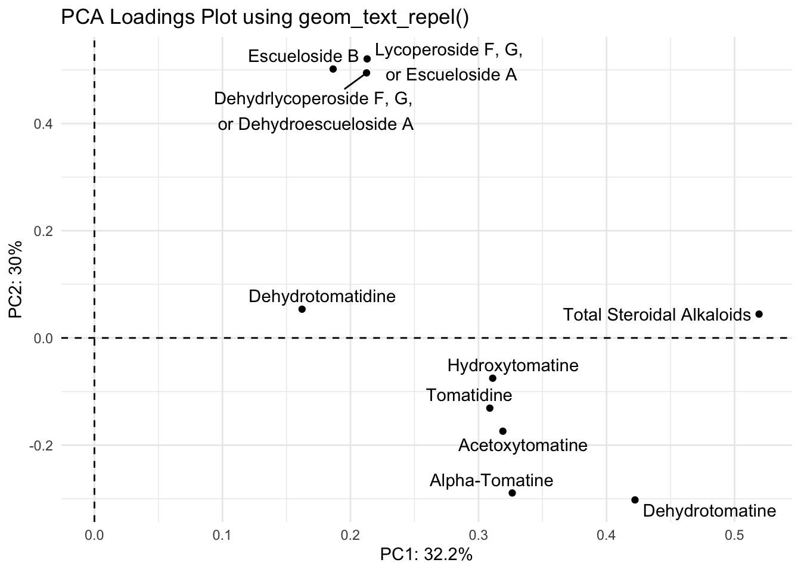
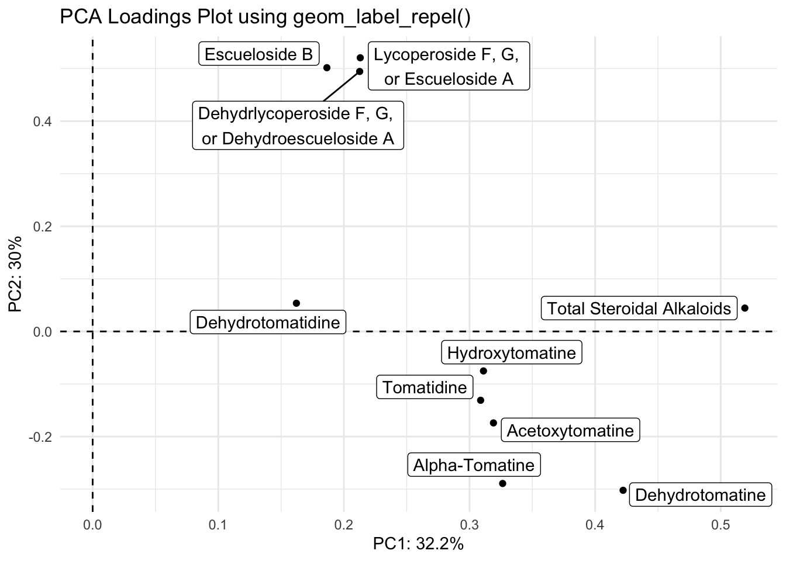

library(tidyverse) # everything
library(readxl) # reading in excel sheets
library(factoextra) # easy PCA plotting
library(glue) # easy pastingPrincipal Components Analysis
Week 10
Introduction
Today we are going to start Module 4 where we put together a lot of the material we’ve learned in the first 3 modules of this course. Today’s material is on conducting principal components analysis (PCA) using R, and visualizing the results with some tools we’ve already learned to use, and some new wrangling and viz tips along the way.
PCA is a data reduction approach, and useful if you have many variables, for example, thousands of genes or metabolites. PCA creates summary variables (the principal components) which maximize the variation in the dataset. It can be categorized as an unsupervised approach, as PCA doesn’t know which samples belong to your different groups. When you look at a scores plot, points that are closer together are more similar based on your input data, and those further apart are more different. The location of the loadings helps you understand what is driving those differences in your scores plot.
If you are unfamiliar with PCA, I’d recommend these two Youtube videos by Josh Starmer of StatQuest which explain PCA in 5 mins, or with more detail in 20 min. Bam 💥!
Read in data
Today we are going to continue to use the same real research data from my group from the lessons on distributions and correlations. We will be reading in the supplementary data from a paper from my group written by Michael Dzakovich, and published in The Plant Genome. The data is present in a Excel worksheet, so we will use the function read_excel() from the tidyverse (but not core tidyverse) package readxl. We want to import Supplemental Table 3. You can indicate which sheet you want to import in the arguments to read_excel().
alkaloid_blups <- read_excel("data/tpg220192-sup-0002-supmat.xlsx",
sheet = "S3 BLUP Diversity Panel")Let’s take a look at this new data sheet.
knitr::kable(head(alkaloid_blups))| Genotype | Plot_Source | Species | Class | Origin | Provence | Blanca_Cluster1 | Blanca_Cluster2 | Passport_Species | Passport_Classification | Sim_Grouping | Dehydrotomatidine | Tomatidine | DehydrotomatineA1 | Dehydrotomatine2 | TotalDehydrotomatine | Tomatine | Hydroxytomatine1 | Hydroxytomatine2 | Hydroxytomatine3 | Hydroxytomatine4 | TotalHydroxytomatine | Acetoxytomatine1 | Acetoxytomatine2 | Acetoxytomatine3 | TotalAcetoxytomatine | DehydrolycoperosideFGdehydroesculeosideA | LycoperosideFGEsculeosideA1 | LycoperosideFGEsculeosideA2 | TotalLycoperosideFGEsculeosideA | EsculeosideB1 | EsculeosideB2 | EsculeosideB3 | TotalEsculeosideB | Total | Latitude | Longitude |
|---|---|---|---|---|---|---|---|---|---|---|---|---|---|---|---|---|---|---|---|---|---|---|---|---|---|---|---|---|---|---|---|---|---|---|---|---|
| CULBPT_05_11 | 2K9-8584 | Processing | Cultivated Processing | USA | NY | SLL_processing_2 | SLL_processing_2 | SLL | SLL_processing_NY | Arid | 0.0001504 | 0.0043495 | 0.0072241 | -0.0010738 | 0.0061503 | 0.1929106 | 0.0102521 | 0.1596566 | 0.0352666 | 0.0864042 | 0.2917962 | -0.0680508 | -0.1242448 | 0.0117481 | -0.1805475 | -0.0369856 | 0.0056573 | -0.1693034 | -0.1636462 | -0.0340685 | -0.0061713 | -0.0371543 | -0.0773942 | 0.0365648 | 40.712800000000001 | -74.006 |
| CULBPT_05_15 | 2K9-8622 | Processing | Cultivated Processing | USA | NY | SLL_processing_2 | SLL_processing_2 | SLL | SLL_processing_NY | Arid | -0.0000272 | -0.0001716 | 0.0086547 | 0.0000000 | 0.0086547 | 0.2824926 | 0.0006910 | 0.1118818 | 0.0243950 | 0.0189345 | 0.1559021 | 0.0038232 | 0.0467380 | 0.0024737 | 0.0530349 | 0.0066251 | 0.0125334 | 0.3417664 | 0.3542998 | 0.0138429 | 0.0021833 | 0.0139309 | 0.0299571 | 0.8907677 | 40.712800000000001 | -74.006 |
| CULBPT_05_22 | 2K17-7708-1 | Processing | Cultivated Processing | USA | NY | SLL_processing_2 | SLL_processing_2 | SLL | SLL_processing_NY | Arid | -0.0000649 | -0.0002516 | 0.0085205 | 0.0000000 | 0.0085205 | 0.1755250 | -0.0001804 | 0.0505547 | 0.0040900 | 0.0023229 | 0.0576202 | 0.0078240 | 0.0069610 | -0.0001145 | 0.0146705 | 0.0031468 | 0.0150674 | 0.3840689 | 0.3991363 | 0.0007128 | 0.0008227 | 0.0028133 | 0.0043489 | 0.6618186 | 40.712800000000001 | -74.006 |
| CULBPT04_1 | 2K9-8566 | Processing | Cultivated Processing | USA | NY | SLL_processing_2 | SLL_processing_2 | SLL | SLL_processing_NY | Arid | -0.0000272 | 0.0001259 | -0.0038737 | 0.0000000 | -0.0038737 | -0.0061446 | 0.0015930 | 0.1059454 | 0.0195829 | 0.0083566 | 0.1354779 | 0.0098585 | 0.0095344 | 0.0007941 | 0.0201870 | 0.0049377 | 0.0100416 | 0.3466282 | 0.3566699 | 0.0100830 | 0.0006432 | 0.0089015 | 0.0196277 | 0.5269806 | 40.712800000000001 | -74.006 |
| E6203 | 2K9-8600 | Processing | Cultivated Processing | USA | CA | SLL_processing_1 | SLL_processing_1_1 | SLL | SLL_processing_CA | Arid | -0.0000272 | 0.0000159 | 0.0099538 | 0.0000000 | 0.0099538 | 0.2929606 | 0.0000000 | 0.0227075 | 0.0039160 | 0.0088279 | 0.0354514 | 0.0002365 | 0.0395374 | 0.0041794 | 0.0439532 | 0.0027439 | 0.0133225 | 0.3018732 | 0.3151958 | 0.0080894 | -0.0003574 | 0.0100045 | 0.0177365 | 0.7179839 | 36.778300000000002 | -119.4179 |
| F06-2041 | 2K16-9843 | Processing | Cultivated Processing | USA | OH | SLL_processing_1 | SLL_processing_1_3 | SLL | SLL_processing_OH | Humid | -0.0000272 | -0.0001648 | -0.0011236 | 0.0000000 | -0.0011236 | 0.0169681 | 0.0011237 | 0.0195573 | -0.0016308 | -0.0016069 | 0.0188454 | -0.0004237 | 0.0271524 | -0.0005286 | 0.0262002 | 0.0053084 | 0.0049033 | 0.1647694 | 0.1696728 | -0.0006298 | -0.0003074 | 0.0019315 | 0.0009943 | 0.2352713 | 40.417299999999997 | -82.9071 |
What are the dimensions of this dataframe?
dim(alkaloid_blups)[1] 107 37Light wrangling
Here we have the best linear unbiased predictors (BLUPs) representing the alkaloid content of 107 genotypes of tomatoes. There is extra meta-data here we won’t use, so like we did in correlations, we are going to create a vector to indicate which column name reprents the alkaloids we want to include in our principal components analysis. Then we can create a new trimmed dataframe.
alkaloid_total_names <- c("Dehydrotomatidine",
"Tomatidine",
"TotalDehydrotomatine",
"Tomatine",
"TotalHydroxytomatine",
"TotalAcetoxytomatine",
"DehydrolycoperosideFGdehydroesculeosideA",
"TotalLycoperosideFGEsculeosideA",
"TotalEsculeosideB",
"Total")
alkaloid_blups_trim <- alkaloid_blups %>%
select(Genotype, Species, Class, all_of(alkaloid_total_names))
# did it work?
colnames(alkaloid_blups_trim) # yes [1] "Genotype"
[2] "Species"
[3] "Class"
[4] "Dehydrotomatidine"
[5] "Tomatidine"
[6] "TotalDehydrotomatine"
[7] "Tomatine"
[8] "TotalHydroxytomatine"
[9] "TotalAcetoxytomatine"
[10] "DehydrolycoperosideFGdehydroesculeosideA"
[11] "TotalLycoperosideFGEsculeosideA"
[12] "TotalEsculeosideB"
[13] "Total" Run PCA
There are many packages that have functions that run PCA (including ) but I think the most common function used is a part of base R, and is called prcomp().
Warning
Note, PCA will allow zeroes, but will throw an error if you feed it NAs.
alkaloids_pca <- prcomp(alkaloid_blups_trim[,-c(1:3)],
scale = TRUE, # default is false
center = TRUE) # default is true, just being explicitLet’s investigate alkaloids_pca.
glimpse(alkaloids_pca)List of 5
$ sdev : num [1:10] 1.794 1.732 1.215 0.99 0.776 ...
$ rotation: num [1:10, 1:10] 0.162 0.309 0.422 0.326 0.311 ...
..- attr(*, "dimnames")=List of 2
.. ..$ : chr [1:10] "Dehydrotomatidine" "Tomatidine" "TotalDehydrotomatine" "Tomatine" ...
.. ..$ : chr [1:10] "PC1" "PC2" "PC3" "PC4" ...
$ center : Named num [1:10] 0.000169 0.00721 0.142798 1.865975 1.323755 ...
..- attr(*, "names")= chr [1:10] "Dehydrotomatidine" "Tomatidine" "TotalDehydrotomatine" "Tomatine" ...
$ scale : Named num [1:10] 0.000505 0.024096 0.339379 5.889986 2.91824 ...
..- attr(*, "names")= chr [1:10] "Dehydrotomatidine" "Tomatidine" "TotalDehydrotomatine" "Tomatine" ...
$ x : num [1:107, 1:10] -1.51 -1.5 -1.55 -1.55 -1.52 ...
..- attr(*, "dimnames")=List of 2
.. ..$ : NULL
.. ..$ : chr [1:10] "PC1" "PC2" "PC3" "PC4" ...
- attr(*, "class")= chr "prcomp"print(alkaloids_pca)Standard deviations (1, .., p=10):
[1] 1.7944141686 1.7318715307 1.2151400892 0.9904494488 0.7763914595
[6] 0.6695313752 0.4394142511 0.2041300753 0.1932182462 0.0001503975
Rotation (n x k) = (10 x 10):
PC1 PC2 PC3
Dehydrotomatidine 0.1621938 0.05363402 -0.06746652
Tomatidine 0.3088504 -0.13094437 -0.44243776
TotalDehydrotomatine 0.4222731 -0.30216776 -0.22116400
Tomatine 0.3263804 -0.28919346 -0.43424991
TotalHydroxytomatine 0.3111090 -0.07515005 0.42780515
TotalAcetoxytomatine 0.3190534 -0.17396967 0.54287286
DehydrolycoperosideFGdehydroesculeosideA 0.2125680 0.49447329 -0.07346836
TotalLycoperosideFGEsculeosideA 0.2130280 0.52056383 -0.08463631
TotalEsculeosideB 0.1864604 0.50165801 -0.10122926
Total 0.5191805 0.04443498 0.24834278
PC4 PC5 PC6
Dehydrotomatidine 0.92897283 -0.275272461 -0.09845544
Tomatidine 0.13150651 0.482582095 0.65879800
TotalDehydrotomatine -0.16555038 -0.170452131 -0.15777601
Tomatine -0.13638091 -0.163532836 -0.41927007
TotalHydroxytomatine 0.15203796 0.706002906 -0.41591986
TotalAcetoxytomatine -0.05462895 -0.326082234 0.41704857
DehydrolycoperosideFGdehydroesculeosideA -0.16278360 0.013643330 -0.06919125
TotalLycoperosideFGEsculeosideA -0.09078436 -0.009476836 -0.02310538
TotalEsculeosideB 0.02495982 -0.037371129 0.01529154
Total -0.11066018 -0.170588385 0.05600981
PC7 PC8 PC9
Dehydrotomatidine 0.13097525 -0.02201625 -0.012909093
Tomatidine 0.03505366 0.05778857 0.054315300
TotalDehydrotomatine 0.03480557 -0.61023340 -0.475709677
Tomatine -0.09303946 0.40353582 0.403874861
TotalHydroxytomatine -0.04702814 -0.04023463 0.009165434
TotalAcetoxytomatine -0.01377758 -0.02258828 0.182475550
DehydrolycoperosideFGdehydroesculeosideA 0.61727735 -0.31823996 0.437114636
TotalLycoperosideFGEsculeosideA 0.10012665 0.42335087 -0.583833541
TotalEsculeosideB -0.76029219 -0.28461575 0.203734859
Total -0.01570365 0.31194871 -0.025467058
PC10
Dehydrotomatidine -0.0001604947
Tomatidine 0.0010655927
TotalDehydrotomatine 0.0147128823
Tomatine 0.2559833151
TotalHydroxytomatine 0.1268345182
TotalAcetoxytomatine 0.5059522400
DehydrolycoperosideFGdehydroesculeosideA 0.0080094872
TotalLycoperosideFGEsculeosideA 0.3707973486
TotalEsculeosideB 0.0226436777
Total -0.7239562737class(alkaloids_pca)[1] "prcomp"We can see that the resulting PCA object is a prcomp object, and is a list of 5 lists and vectors.
This includes:
sdev: the standard deviations (square roots of the eigenvalues of the covariance matrix) of the principal componentsrotation: the PCs for the variables (i.e., the variable loadings)x: the PCs for samples (i.e., the scores)center: the centering usedscale: the scaling used
We can also look at the output of our PCA in a different way using the function summary().
summary(alkaloids_pca) Importance of components:
PC1 PC2 PC3 PC4 PC5 PC6 PC7
Standard deviation 1.794 1.7319 1.2151 0.9904 0.77639 0.66953 0.43941
Proportion of Variance 0.322 0.2999 0.1477 0.0981 0.06028 0.04483 0.01931
Cumulative Proportion 0.322 0.6219 0.7696 0.8677 0.92796 0.97279 0.99210
PC8 PC9 PC10
Standard deviation 0.20413 0.19322 0.0001504
Proportion of Variance 0.00417 0.00373 0.0000000
Cumulative Proportion 0.99627 1.00000 1.0000000We can convert this summary into something later usable by extraction the element importance from summary(alkaloids_pca) and converting it to a dataframe.
importance <- summary(alkaloids_pca)$importance %>%
as.data.frame()
knitr::kable(head(importance))| PC1 | PC2 | PC3 | PC4 | PC5 | PC6 | PC7 | PC8 | PC9 | PC10 | |
|---|---|---|---|---|---|---|---|---|---|---|
| Standard deviation | 1.794414 | 1.731872 | 1.21514 | 0.9904494 | 0.7763915 | 0.6695314 | 0.4394143 | 0.2041301 | 0.1932182 | 0.0001504 |
| Proportion of Variance | 0.321990 | 0.299940 | 0.14766 | 0.0981000 | 0.0602800 | 0.0448300 | 0.0193100 | 0.0041700 | 0.0037300 | 0.0000000 |
| Cumulative Proportion | 0.321990 | 0.621930 | 0.76959 | 0.8676900 | 0.9279600 | 0.9727900 | 0.9921000 | 0.9962700 | 1.0000000 | 1.0000000 |
By looking at the summary we can see, for example, that the first two PCs explain 62.19% of variance.
We are going to go over making scree, scores and loadings plots using helper functions (here, they start fviz_() and come from the package factoextra, and manually via ggplot. The helper functions allow you look at each plot type simply. This is an important step because when you make your plots with ggplot, you want to be sure they look how they should.
Scree plot
A scree plot shows what percentage of total variance is explained by each principal component.
Using fviz_eig()
We can do this quickly using fviz_eig().
fviz_eig(alkaloids_pca)
You can actually do this very easily with base R plotting as well. If you weren’t planning to publish this type of plot, it might not be important it look beautiful, and then both of these options would be great and quick. Note though that the base R plot is plotting at a different scale.
plot(alkaloids_pca)
Manually
If you wanted to make a scree plot manually, you could by plotting using a wrangled version of the importance dataframe we made earlier.
importance_tidy <- importance %>%
rownames_to_column(var = "measure") %>%
pivot_longer(cols = PC1:PC10,
names_to = "PC",
values_to = "value")
importance_tidy %>%
filter(measure == "Proportion of Variance") %>%
ggplot(aes(x = PC, y = value)) +
geom_col()
Almost! PC10 is displaying right after PC1 because alphabetically, this is the order. Let’s fix it.
# create a vector with the order we want
my_order <- colnames(importance)
# relevel according to my_order
importance_tidy$PC <- factor(importance_tidy$PC, levels = my_order)
# check to see if it worked
levels(importance_tidy$PC) [1] "PC1" "PC2" "PC3" "PC4" "PC5" "PC6" "PC7" "PC8" "PC9" "PC10"Let’s plot again.
importance_tidy %>%
filter(measure == "Proportion of Variance") %>%
ggplot(aes(x = PC, y = value)) +
geom_col()
Success!
If we want to tighten up this plot we can.
importance_tidy %>%
filter(measure == "Proportion of Variance") %>%
ggplot(aes(x = PC, y = value)) +
geom_col(alpha = 0.1, color = "black") +
scale_y_continuous(labels = scales::percent) +
theme_minimal() +
labs(x = "Principal component",
y = "Percent variance explained",
title = "Scree plot of 10 alkaloids analyzed across 107 tomato accessions")
This is a perfectly ready scree plot for the supplementary materials of a publication.
Scores plot
When people talk about PCA plots, what they most often mean is PCA scores plots. Here, each point represents a sample, and we are plotting their coordinates typically for the first 2 PCs. Sometimes people make 3D PCA plots with the first 3 PCs but I think these are not easy to look in 2D and I wouldn’t recommend you to put them in your papers.
Using fviz_pca_ind()
We can also look at a scores plot using fviz_pca_ind() where ind means individuals. Here, each point is a sample.
fviz_pca_ind(alkaloids_pca)
Because our alkaloids_pca doesn’t have any meta-data, this is a hard to interpret plot, where each number indicates the rownumber of that sample. Making the scores plot this way is useful because it shows us the shape of the plot which we can use to confirm that we have made a ggplot that looks like its been created correctly.
Manually
We want to plot the scores, which are in provided in alkaloids_pca$x.
We can convert the list into a dataframe of scores values by using as.data.frame(). Then we can bind back our relevant metadata so they’re all together. Note, to use bind_cols() both datasets need to be in the same order. In this case they are so we are good.
# create a df of alkaloids_pca$x
scores_raw <- as.data.frame(alkaloids_pca$x)
# bind meta-data
scores <- bind_cols(alkaloid_blups[,1:3], # first 3 columns
scores_raw)Now we can plot.
scores %>%
ggplot(aes(x = PC1, y = PC2, color = Species)) +
geom_point() 
Our shapes are looking the same, this is good. Let’s pretty up our plot.
# create objects indicating percent variance explained by PC1 and PC2
PC1_percent <- round((importance[2,1])*100, # index 2nd row, 1st column, times 100
1) # round to 1 decimal
PC2_percent <- round((importance[2,2])*100, 1)
# plot
(scores_plot <- scores %>%
ggplot(aes(x = PC1, y = PC2, fill = Species)) +
geom_hline(yintercept = 0, linetype = "dashed") +
geom_vline(xintercept = 0, linetype = "dashed") +
geom_point(shape = 21, color = "black", size = 2.5, alpha = 0.7) +
scale_fill_brewer(palette = "Set2") +
theme_minimal() +
labs(x = glue("PC1: {PC1_percent}%"),
y = glue("PC2: {PC2_percent}%"),
title = "PCA Scores Plot of 10 Alkaloids Present in 107 Tomato Accessions"))
This looks nice.
Loadings plot
Using fviz_pca_var()
We can also look at a loadings plot using fviz_pca_var() where var means variables. Here, each point is a variable.
fviz_pca_var(alkaloids_pca)
Manually
We can also make a more customized loadings plot manually using ggplot and using the dataframe alkaloids_pca$rotation.
# grab raw loadings, without any metadata
loadings_raw <- as.data.frame(alkaloids_pca$rotation)
loadings <- loadings_raw %>%
rownames_to_column(var = "alkaloid")We can then plot with ggplot like normal.
loadings %>%
ggplot(aes(x = PC1, y = PC2, label = alkaloid)) +
geom_hline(yintercept = 0, linetype = "dashed") +
geom_vline(xintercept = 0, linetype = "dashed") +
geom_point() +
geom_text() +
scale_fill_brewer() +
theme_minimal() +
labs(x = glue("PC1: {PC1_percent}%"),
y = glue("PC2: {PC2_percent}%"),
title = "PCA Loadings Plot") 
We have two problems with this plot.
- The names are abbreviated and not how we want them to appear
- The label names are on top of the points/each other
We can fix both of these problems.
We can create a vector of the labels as we want them to appear, as we have done previously.
alkaloid_labels <- c("Dehydrotomatidine",
"Tomatidine",
"Dehydrotomatine",
"Alpha-Tomatine",
"Hydroxytomatine",
"Acetoxytomatine",
"Dehydrlycoperoside F, G, \nor Dehydroescueloside A",
"Lycoperoside F, G, \nor Escueloside A",
"Escueloside B",
"Total Steroidal Alkaloids")Then we can re-plot with these labels.
loadings %>%
ggplot(aes(x = PC1, y = PC2, label = alkaloid_labels)) +
geom_point() +
geom_text() +
scale_fill_brewer() +
theme_minimal() +
labs(x = glue("PC1: {PC1_percent}%"),
y = glue("PC2: {PC2_percent}%"),
title = "PCA Loadings Plot") 
Ok the label names are better but they’re still smushed. The package ggrepel has some good functions to help us. You can try using geom_text_repel() and geom_label_repel().

With geom_text_repel()
library(ggrepel)
(loadings_plot <- loadings %>%
ggplot(aes(x = PC1, y = PC2, label = alkaloid_labels)) +
geom_hline(yintercept = 0, linetype = "dashed") +
geom_vline(xintercept = 0, linetype = "dashed") +
geom_point() +
geom_text_repel() +
scale_fill_brewer() +
theme_minimal() +
labs(x = glue("PC1: {PC1_percent}%"),
y = glue("PC2: {PC2_percent}%"),
title = "PCA Loadings Plot using geom_text_repel()"))
With geom_label_repel()
loadings %>%
ggplot(aes(x = PC1, y = PC2, label = alkaloid_labels)) +
geom_hline(yintercept = 0, linetype = "dashed") +
geom_vline(xintercept = 0, linetype = "dashed") +
geom_point() +
geom_label_repel() +
scale_fill_brewer() +
theme_minimal() +
labs(x = glue("PC1: {PC1_percent}%"),
y = glue("PC2: {PC2_percent}%"),
title = "PCA Loadings Plot using geom_label_repel()") 
patchwork
You can pop these two plots side by side easing using the package patchwork.

library(patchwork)
scores_plot + loadings_plot
Adding the plots was easy, but now we see that they scaling of the plots is not exactly the same and doesn’t promote easy comparison. Let’s fix that.
# setting the range of the plot
(scores_plot_ranged <- scores_plot +
coord_cartesian(xlim = c(-2, 6.5), ylim = c(-5, 6.5)))
# what is the ratio of the space on each side of the axis for the scores plot?
(x_ratio <- 2/(2 + 6.5))[1] 0.2352941(y_ratio <- 5/(5 + 6.5))[1] 0.4347826# check the ending range for the loadings plot
# 0.6 units looks good for both x and y
# what should the low range value be so that both plots are equally scaled?
# making the loadings plot match this range
(loadings_plot_ranged <- loadings_plot +
coord_cartesian(xlim = c(-0.1846, 0.6), ylim = c(-0.4602, 0.6)))
Plot
scores_plot_ranged + loadings_plot_ranged
Biplot
Using fviz_pca().
You can make a biplot quickly with fviz_pca(). Note, fviz_pca_biplot() and fviz_pca() are the same.
fviz_pca(alkaloids_pca)Instead of making this plot manually, let’s go through how to alter the existing plot made with fviz_pca(). We can do this because factoextra creates ggplot objects. To start off, we need to be using a dataframe that includes our metadata.
fviz_pca(alkaloids_pca, # pca object
label = "var",
repel = TRUE,
geom.var = "text") +
geom_point(aes(fill = alkaloid_blups$Species), shape = 21) +
scale_fill_brewer(palette = "Set2") +
theme_minimal() +
labs(x = glue("PC1: {PC1_percent}%"),
y = glue("PC2: {PC2_percent}%"),
title = "PCA Biplot Plot of 10 Alkaloids Present in 107 Tomato Accessions",
fill = "Species")
This is almost what we want - except we have only the abbreviated names for the alkaloids. Since in a biplot, we are really plotting two different sets of data (the scores and the loadings)there isn’t the ability to use labeller or similar with fviz_pca for the loadings only. There is a workaround though, we can go into our PCA object, change the rownames of alkaloids_pca$rotation to be our longer labels, and that should inherit to our new plot.
# save as a new df
alkaloids_pca_labelled <- alkaloids_pca
# assign alkaloid_labels to rownames
rownames(alkaloids_pca_labelled$rotation) <- alkaloid_labels
# plot
fviz_pca(alkaloids_pca_labelled, # pca object
label = "var",
repel = TRUE,
geom.var = c("text", "point"),
col.var = "black") +
geom_point(aes(fill = alkaloid_blups$Species), shape = 21) +
scale_fill_brewer(palette = "Set2") +
theme_minimal() +
labs(x = glue("PC1: {PC1_percent}%"),
y = glue("PC2: {PC2_percent}%"),
title = "PCA Biplot Plot of 10 Alkaloids Present in 107 Tomato Accessions",
fill = "Species")
Voila.
Useful resources
ggpattern::geom_density_pattern()geom_density_pattern: na.rm = FALSE, orientation = NA
stat_density: na.rm = FALSE, orientation = NA
position_identity